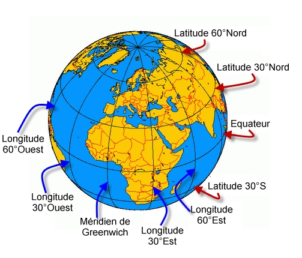

La gélocalisation a été introduite dans HTML5 pour réaliser des applications basées sur les coordonnées géographiques.
Sur la Terre, pour définir une position, on a besoin de 3 coordonnées : la latitude, la longitude et l'altitude.
La latitude est le décalage en degré par rapport à l'Equateur. La latitude Nord a une valeur positive, la latitude Sud a une valeur négative.
Exemples: Bruxelles (50.846583°), Moscou (55,754529°), New York (40.758637°), Rio de Janeiro (-22,968648°), Johannesbourg (-26,204299°)
La longitude est le décalage en degré par rapport au Méridien de Greenwich. La longitude Est a une valeur positive, la longitude Ouest a une valeur négative.
Exemples: Bruxelles (4,352694°), Moscou (37,619437°), New York (-73,985388°), Rio de Janeiro (-43,188282°), Johannesbourg (28,032033°)
